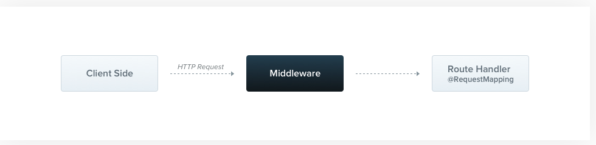
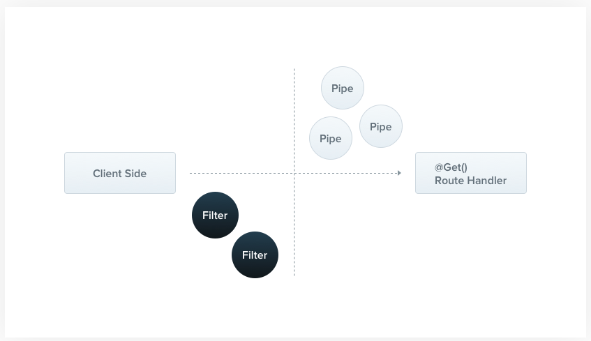
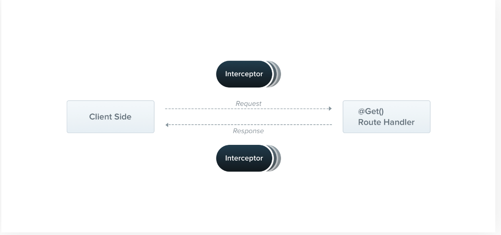

本文为理解nest.js而做记录，内容为官网中的基础部分，目的是为了理解、记忆，所以不会抄原文的例子。
官网
骨架
骨架部分主要介绍：Controllers、Providers、Modules，他们组成了nest应用的最基础部分，可以认为Route Handler部分
Controllers
定义
Controllers are responsible for handling incoming requests and returning responses to the client.路由
分层的定义方法，在类上定义的，被其下的方法所继承，如在类上定义@Controller('customers')，在类方法中定义@Get('profile')，则其路由为GET /customers/profile两种模式
一种是标准模式，也是推荐模式，通过nest的装饰器来使用各种参数;
另一种原生模式（Library-specific），通过@Res(),@Req()获取库原生的request与response对象，来直接进行操作。
这两种方式不能同时使用，当然nest推荐前者。装饰器
| 装饰器 | 介绍 |
|---|---|
| @Req() | 获取Request对象(express) |
| @Res() | 获取Response对象(express) |
| @Session() | 获取req.session |
| @Param(key?: string) | req.params / req.params[key],param是路由中的参数 |
| @Body(key?: string) | req.body / req.body[key] |
| @Query(key?: string) | req.query / req.query[key],query是?后的参数 |
| @Headers(name?: string) | req.headers / req.headers[name] |
| @HttpCode(201) | 指定response中的返回值 |
Providers
定义
Many of the basic Nest classes may be treated as a provider – services, repositories, factories, helpers, and so on. A provider is simply a class annotated with an @Injectable() decorator理解
这里说的很明白的，provider可以理解成功能的提供者了,任何可以注入的类都可以认为是provider。原文中也说，provider不仅仅是@Injectable(),它可以是数值、类、同步或异步工厂(plain values, classes, and either asynchronous or synchronous factories)，这个在后边的Custom Provider中会做更多介绍
Modules
定义
A module is a class annotated with a @Module() decorator. The @Module() decorator provides metadata that Nest makes use of to organize the application structure.理解
Module要做一点解释，Nest是Module来组织的，不论是Controller还是Provider都需要注册到Module中才能被Nest托管。还有一点比较有趣的，在Module中可以imports其他Module，而imports的内容，其实是被引用Module中exports出的内容属性
@Module装饰器接收一个对象，其属性包括
| 属性 | 介绍 |
|---|---|
| providers | 被Nest injector实例化的providers |
| controllers | 被Nest injector实例化的controllers |
| imports | 引入这些moludes export 的providers |
| exports | providers的子集，被其他模块可以import |
经脉
经脉介绍中间件(Middleware)、异常过滤器(Exception filters)、管道(Pipes)、哨兵(Guards)、拦截器(Interceptors)。我觉得广义上看，他们都可以被称为拦截器，他们要么在拦截request（Middleware,Pipe，Guard），要么在拦截response(Exception filter)，要么双方都拦截（Interceptors）。
它们有着类似的scope，包括：全局(global)、控制器（controller）、路由函数(router)，其实隐藏着模块（module）等范围
Middleware
定义
Middleware is a function which is called before the route handler. Middleware functions have access to the request and response objects, and the next() middleware function in the application’s request-response cycle.
理解
中间件常见的场景包括，Log，cors，helmet等，中间件的使用上，主要在routers,controllers,module范围内，原文中没有在全局使用中间件。
Exception filters
定义
Nest comes with a built-in exceptions layer which is responsible for processing all unhandled exceptions across an application. When an exception is not handled by your application code, it is caught by this layer, which then automatically sends an appropriate user-friendly response.
理解
从定义中可以看出，它是在request上，进行filter，当服务端有异常抛出，对异常进行捕获、处理，并返回给客户端。
异常过滤器4种使用方式都支持，这部分可以写一些异常处理的代码，定义好Exception 与 exception 与 filter，然后在代码中可以方便的抛异常了。
Pipes
定义
A pipe is a class annotated with the @Injectable() decorator. Pipes should implement the PipeTransform interface.
原文可能觉得pipe真不用定义了，所以也没有定义，就是函数编程范式pipe，其实跟中间件、拦截器都一样.使用场景
- transformation: transform input data to the desired output
- validation: evaluate input data and if valid, simply pass it through unchanged; otherwise, throw an exception when the data is incorrect
就是数据转换与有效性检验。这一部分集成化比较高，通过class-validator and class-transformer可以直接使用ValidationPipe，ParseIntPipe了，支持4种使用方式
Guards
定义
A guard is a class annotated with the @Injectable() decorator. Guards should implement the CanActivate interface.
guard
Guards have a single responsibility. They determine whether a given request will be handled by the route handler or not, depending on certain conditions (like permissions, roles, ACLs, etc.) present at run-time. This is often referred to as authorization。
在express中，认证由中间件来做，原文中有对为什么用guard而不用middleware的解释，大约就是middleware你需要控制next，并且不知道next的下一步是什么，而guard由于有执行环境（ExecutionContext），可以清楚的知道下一步执行什么。理解
4种使用方式都支持。
这里使用了reflect，因为对于guard，它需要知道定义在每个router的角色
实例
这个部分要好好写一下，与原文中的例子略有不同，原文中认证的角色，我们要认证权限
{kind=link}
Interceptors
定义
An interceptor is a class annotated with the @Injectable() decorator. Interceptors should implement the NestInterceptor interface.
理解
支持4种使用方式。通过next.handle()来调用主体，然后在pipe中对返回进行处理。在piple中可以对response进行处理，可以对异常进行处理等。
应用场景比如通过记录每个调用的入口、出口时间来计算响应时间，对response中数据的处理，对异常的处理等。
Interceptor可以对前后两端的处理，由于入口侧的验证、转换、认证都有特殊的解决方案了，所以我觉得它更注重出口侧一些，以及更注重业务逻辑一些。
总结
中间件的实现可能与其他略有不同，Exception filter，pipe,guard简直就是interception在各应用场景的细化。
在使用上，需要对异常处理(Exception Filter)、参数验证(Pipe)、权限认证(Guard)、日志(Middleware/Interceptor)、监控(Interceptor)等，都可以用到.
套路
Authentication
这里的认证，并不是权限认证，而是主要是对客户端的认证，这里只记录jwt方式，认证主要使用Passport模块
过程
客户端进行登录，后端核对完用户名、密码之后，创一个token给浏览器，浏览器之后在header(cookie与Authorization其实都行)中一直带着，来做http状态的认证。理解
因为后端要验证用户名、密码，以及生成token，就需要一个Service来做这件事情，而passport本身支持‘bearer’,‘jwt’等不同策略，也就需要一个Strategy来解耦不同策略，而这个策略本身要依赖那个验证的Service。Strategy完成的是对token的解析，调用Service去验证，其统一的接口应该validate()函数。
在Strategy的使用上，即Strategy如何被nest使用，这里只能做一个推测，其通过Module的providers属性注入到nest中，nest在注册PassportModule时，自动将注册的Strategy注册到Passport当中，并完成jwt认证过程。
在使用上，通过Passport提供的AuthGuard来使用，这样就与Guard联系到了一起。本质上讲，Passport也是一种Guard，更本质，就是一前置拦截器。
Database/ORM
这里的ORM使用的TypeORM
ypeORM
概念
这里需要注意的概念包括：连接(Connection)
在这里连接的建立，使用过在ApplicationModule中，import TypeOrmModule.forRoot()来建立的，forRoot的参数就是一个数据库连接必备的字段。连接本身有name属性，缺省为’default’，这在多连接建立时会需要。实体(Entity)
实体就是Model层，需要指定类属性对应的表结构，并指定one2Many/Many2One等与其他实体的关系实体管理器(EntityManager)
Using EntityManager you can manage (insert, update, delete, load, etc.) any entity. EntityManager is just like a collection of all entity repositories in a single place实体管理器是对所有实体进行管理，它是Repository的一个集合
库(Repository)
Repository is just like EntityManager but its operations are limited to a concrete entityRepository是对单个实体进行管理
使用
需要在Module中imports TypeOrmModule.forFeature([Photo])，这个forFeature应该是获取Photo实体所对应的Repository，进而在Service中就可以使用Repository来操作实体了。
在TypeORM官网中，可以通过Connection来直接获取Repository，在nest中介绍的并不详细。
应该是在forRoot时，指明连接的名字，然后在Service中通过InjectConnection(‘连接名’)，来注入连接，通过@InjectEntityManager(‘连接名’)来注入实体管理器entityManager。